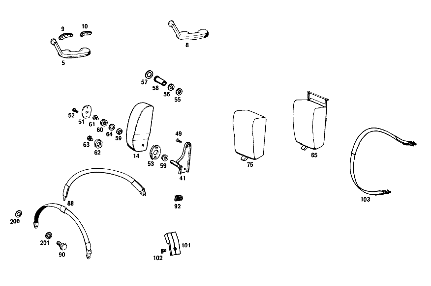

| № | Артикул | Название | Кол. | Примечание | Ограничение |
|---|---|---|---|---|---|
| 5 | A 108 970 22 01 | ПОДЛОКОТНИК | 1 | RIGHT FRONT DOOR [003] STATE COLOR AND CHASSIS NO. WHEN ORDERING [011] 015 FROM CHASSIS 002120 | |
| 8 | A 108 970 22 01 | ПОДЛОКОТНИК | 1 | RIGHT REAR DOOR [003] STATE COLOR AND CHASSIS NO. WHEN ORDERING | |
| 9 | A 108 971 06 43 | НАКЛАДКА | 2 | RIGHT ARMRESTS TO FRONT AND REAR DOORS | |
| 10 | A 108 971 08 43 | НАКЛАДКА | 2 | RIGHT ARMRESTS TO FRONT AND REAR DOORS | |
| 14 | A 109 970 01 30 | ПОДЛОКОТНИК ОТКИДН. | - | [057] TOGETHER WITH: 1 STOP 109 973 02 26; 1 WASHER 109 990 00 40; 2 WASHER 109 990 01 40; 1 RUBBER RING 109 987 00 41; 1 INSULATING HOSE 040621 018205; 1 SPACER 109 973 00 37 | |
| 41 | A 109 970 11 20 | ПОДШИПНИК | 1 | СЛЕВА [001] 015 UP TO CHASSIS 002130 | |
| 49 | N 007988 006169 | БОЛТ | 4 | [402] БОЛЬШЕ НЕ ПОСТАВЛЯЕТСЯ [028] 018 FROM CHASSIS 002222 [002] 015 FROM CHASSIS 002131 [074] 057 UP TO CHASSIS 000023 | |
| 51 | A 100 973 13 11 | ПЛАСТИНА | - | ||
| 51 | A 100 973 09 11 | ПЛАСТИНА | 2 | [029] 016 UP TO CHASSIS 001887; 018 UP TO CHASSIS 002098 | |
| 52 | N 007988 004105 | БОЛТ | 4 | [029] 016 UP TO CHASSIS 001887; 018 UP TO CHASSIS 002098 | |
| 53 | A 109 973 00 26 | УПОР | 2 | [058] 018 UP TO CHASSIS 004324; 056 UP TO CHASSIS 001919 [028] 018 FROM CHASSIS 002222 | |
| 59 | A 108 973 00 29 | НАПРАВЛЯЮЩАЯ | 4 | [058] 018 UP TO CHASSIS 004324; 056 UP TO CHASSIS 001919 [028] 018 FROM CHASSIS 002222 | |
| 60 | A 109 990 00 50 | ГАЙКА | 2 | [014] 015 UP TO CHASSIS 002101 | |
| 61 | A 109 990 00 12 | БОЛТ | 2 | [014] 015 UP TO CHASSIS 002101 | |
| 63 | N 000933 004027 | Винт | 2 | [015] 015 FROM CHASSIS 002102 [033] 016 UP TO CHASSIS 000813 | |
| 64 | A 111 990 28 40 | ШАЙБА | NB | [402] БОЛЬШЕ НЕ ПОСТАВЛЯЕТСЯ [014] 015 UP TO CHASSIS 002101 | |
| 65 | A 109 970 00 30 | ПОДЛОКОТНИК ОТКИДН. | - | [054] 016 UP TO CHASSIS 002359; 018 UP TO CHASSIS 003055 | |
| 75 | A 109 970 00 47 | - ОБИВКА | 1 | ВЕЛЮР [003] STATE COLOR AND CHASSIS NO. WHEN ORDERING [402] БОЛЬШЕ НЕ ПОСТАВЛЯЕТСЯ [046] 018 UP TO CHASSIS 004920 EXCEPT FOR 004913,004914; 056 UP TO CHASSIS 002604 EXCEPT FOR, SEE FOOTNOTE 48 [048] 002497, 002511, 002513, 002515, 002516, 002532, 002533, 002538, 002541, 002544, 002547, 002549, 002552, 002554- 002560, 002564- 002566, 002570, 002572, 002574, 002575, 002580, 002582, 002587, 002588, 002590, 002592, 002597, 002602. | |
| 88 | A 110 880 20 85 | ЗАЩИТНАЯ РЕШЕТКА | 2 | FRONT SEAT, THREE\-POINT ANCHORAGE [065] 015 FROM CHASSIS 002131-002230 [067] 015 UP TO CHASSIS 002337; 016 UP TO CHASSIS 000225 | |
| 103 | A 110 860 21 85 | РЕМЕНЬ БЕЗОПАСНОСТИ | 3 | REAR SEAT BENCH,OUTSIDE AND CENTRAL [069] 015 FROM CHASSIS 002131; 016 UP TO CHASSIS 000225 | |
| 200 | A 000 987 21 41 | Эластомерная шайба | 6 | SAFETY BELT TO TUNNEL AND TO REAR FLOOR [070] 015 FROM CHASSIS 002131-002336 [072] 016 UP TO CHASSIS 000225 | |
| 201 | A 000 984 35 55 | ШАЙБА | 2 | SAFETY BELT TO TUNNEL AND TO REAR FLOOR [402] БОЛЬШЕ НЕ ПОСТАВЛЯЕТСЯ [070] 015 FROM CHASSIS 002131-002336 | |
| A 108 970 13 01 | ПОДЛОКОТНИК | - | |||
| A 108 970 21 01 | Подлокотник | - | |||
| A 108 970 22 01 | ПОДЛОКОТНИК | 1 | LEFT FRONT DOOR [003] STATE COLOR AND CHASSIS NO. WHEN ORDERING [010] 015 UP TO CHASSIS 002119 | ||
| A 108 970 14 01 | ПОДЛОКОТНИК | - | |||
| A 108 970 22 01 | ПОДЛОКОТНИК | 1 | LEFT FRONT DOOR [003] STATE COLOR AND CHASSIS NO. WHEN ORDERING [010] 015 UP TO CHASSIS 002119 | ||
| A 108 970 21 01 | Подлокотник | - | |||
| A 108 970 22 01 | ПОДЛОКОТНИК | 1 | LEFT FRONT DOOR [003] STATE COLOR AND CHASSIS NO. WHEN ORDERING [011] 015 FROM CHASSIS 002120 | ||
| A 108 970 17 01 | ПОДЛОКОТНИК | - | [010] 015 UP TO CHASSIS 002119 | ||
| A 108 970 21 01 | Подлокотник | - | |||
| A 108 970 22 01 | ПОДЛОКОТНИК | 1 | LEFT REAR DOOR [003] STATE COLOR AND CHASSIS NO. WHEN ORDERING | ||
| A 108 970 18 01 | ПОДЛОКОТНИК | - | [010] 015 UP TO CHASSIS 002119 | ||
| A 108 971 05 43 | НАКЛАДКА | 2 | LEFT ARMRESTS TO FRONT AND REAR DOORS | ||
| A 108 971 07 43 | НАКЛАДКА | 2 | LEFT ARMRESTS TO FRONT AND REAR DOORS | ||
| N 007985 006132 | Винт | 8 | ARMRESTS TO FRONT AND REAR DOORS [402] БОЛЬШЕ НЕ ПОСТАВЛЯЕТСЯ | ||
| A 000 990 41 91 | ГАЙКОДЕРЖАТЕЛЬ | - | |||
| A 000 990 83 91 | ГАЙКОДЕРЖАТЕЛЬ | - | |||
| A 000 990 71 91 | Гайкодержатель | 8 | [415] ПРИМЕЧ. ПО ЗАМЕНЕ ПРИМЕНИМО ТОЛЬКО ДЛЯ СТОЯЩИХ РЯДОМ ПОЗИЦИЙ | ||
| A 000 984 04 56 | ШАЙБА | 2 | ARMREST TO REAR DOOR | ||
| N 007985 006157 | Винт | 4 | ARMRESTS TO FRONT AND REAR DOORS; M6X12 | ||
| A 094 990 68 10 | Пружинное кольцо | 4 | ARMRESTS TO FRONT AND REAR DOORS | ||
| A 109 970 97 30 | ПОДЛОКОТНИК ОТКИДН. | 1 | СИДЕНЬЕ ВОДИТЕЛЯ СЛЕВА [003] STATE COLOR AND CHASSIS NO. WHEN ORDERING [012] 015 UP TO CHASSIS 002094 | ||
| A 109 970 02 30 | ПОДЛОКОТНИК ОТКИДН. | - | [057] TOGETHER WITH: 1 STOP 109 973 02 26; 1 WASHER 109 990 00 40; 2 WASHER 109 990 01 40; 1 RUBBER RING 109 987 00 41; 1 INSULATING HOSE 040621 018205; 1 SPACER 109 973 00 37 | ||
| A 109 970 98 30 | ПОДЛОКОТНИК ОТКИДН. | 1 | СИДЕНЬЕ ВОДИТЕЛЯ СПРАВА [003] STATE COLOR AND CHASSIS NO. WHEN ORDERING [012] 015 UP TO CHASSIS 002094 | ||
| A 109 970 53 30 | ПОДЛОКОТНИК ОТКИДН. | - | [057] TOGETHER WITH: 1 STOP 109 973 02 26; 1 WASHER 109 990 00 40; 2 WASHER 109 990 01 40; 1 RUBBER RING 109 987 00 41; 1 INSULATING HOSE 040621 018205; 1 SPACER 109 973 00 37 [013] 015 FROM CHASSIS 002095 [058] 018 UP TO CHASSIS 004324; 056 UP TO CHASSIS 001919 | ||
| A 109 970 71 30 | ПОДЛОКОТНИК ОТКИДН. | - | [057] TOGETHER WITH: 1 STOP 109 973 02 26; 1 WASHER 109 990 00 40; 2 WASHER 109 990 01 40; 1 RUBBER RING 109 987 00 41; 1 INSULATING HOSE 040621 018205; 1 SPACER 109 973 00 37 | ||
| A 109 970 54 30 | ПОДЛОКОТНИК ОТКИДН. | - | [057] TOGETHER WITH: 1 STOP 109 973 02 26; 1 WASHER 109 990 00 40; 2 WASHER 109 990 01 40; 1 RUBBER RING 109 987 00 41; 1 INSULATING HOSE 040621 018205; 1 SPACER 109 973 00 37 [013] 015 FROM CHASSIS 002095 [058] 018 UP TO CHASSIS 004324; 056 UP TO CHASSIS 001919 | ||
| A 109 970 72 30 | ПОДЛОКОТНИК ОТКИДН. | - | [057] TOGETHER WITH: 1 STOP 109 973 02 26; 1 WASHER 109 990 00 40; 2 WASHER 109 990 01 40; 1 RUBBER RING 109 987 00 41; 1 INSULATING HOSE 040621 018205; 1 SPACER 109 973 00 37 | ||
| A 109 970 14 31 | ПОДЛОКОТНИК ОТКИДН. | 1 | FOLDING, FRONT SEAT, RIGHT [003] STATE COLOR AND CHASSIS NO. WHEN ORDERING | ||
| A 109 970 31 30 | ПОДЛОКОТНИК ОТКИДН. | - | [044] 016 UP TO CHASSIS 001887 | ||
| A 109 970 95 30 | ПОДЛОКОТНИК ОТКИДН. | - | [057] TOGETHER WITH: 1 STOP 109 973 02 26; 1 WASHER 109 990 00 40; 2 WASHER 109 990 01 40; 1 RUBBER RING 109 987 00 41; 1 INSULATING HOSE 040621 018205; 1 SPACER 109 973 00 37 [058] 018 UP TO CHASSIS 004324; 056 UP TO CHASSIS 001919 [030] 016 FROM CHASSIS 001888; 018 FROM CHASSIS 002099 | ||
| A 109 970 25 31 | ПОДЛОКОТНИК ОТКИДН. | 1 | FOLDING, LEFT COMPLETE, BUT LESS COVER | ||
| A 109 970 32 20 | ПОДШИПНИК | - | [044] 016 UP TO CHASSIS 001887 | ||
| A 109 970 96 30 | ПОДЛОКОТНИК ОТКИДН. | - | [057] TOGETHER WITH: 1 STOP 109 973 02 26; 1 WASHER 109 990 00 40; 2 WASHER 109 990 01 40; 1 RUBBER RING 109 987 00 41; 1 INSULATING HOSE 040621 018205; 1 SPACER 109 973 00 37 [058] 018 UP TO CHASSIS 004324; 056 UP TO CHASSIS 001919 [030] 016 FROM CHASSIS 001888; 018 FROM CHASSIS 002099 | ||
| A 109 970 26 31 | ПОДЛОКОТНИК ОТКИДН. | 1 | RIGHT FOLDING; COMPLETE, BUT LESS COVER | ||
| A 000 987 43 72 | - ЗАЩИТА КРОМОК | 2 | 300 MM [002] 015 FROM CHASSIS 002131 [031] 016 UP TO CHASSIS 001222; 018 UP TO CHASSIS 000815 | ||
| A 000 987 43 72 | - ЗАЩИТА КРОМОК | 2 | 250 MM [002] 015 FROM CHASSIS 002131 [031] 016 UP TO CHASSIS 001222; 018 UP TO CHASSIS 000815 | ||
| A 109 970 01 20 | ПОДШИПНИК | - | [014] 015 UP TO CHASSIS 002101 | ||
| A 109 970 02 20 | ПОДШИПНИК | - | [014] 015 UP TO CHASSIS 002101 | ||
| A 109 970 12 20 | ПОДШИПНИК | 1 | СПРАВА [001] 015 UP TO CHASSIS 002130 | ||
| A 109 970 13 20 | ПОДШИПНИК | 1 | [028] 018 FROM CHASSIS 002222 [002] 015 FROM CHASSIS 002131 [074] 057 UP TO CHASSIS 000023 | ||
| A 109 970 37 20 | ПОДШИПНИК | 1 | СЛЕВА [075] 057 FROM CHASSIS 000024 | ||
| A 109 970 14 20 | ПОДШИПНИК | 1 | [028] 018 FROM CHASSIS 002222 [002] 015 FROM CHASSIS 002131 [074] 057 UP TO CHASSIS 000023 | ||
| A 109 970 38 20 | ПОДШИПНИК | 1 | СПРАВА [075] 057 FROM CHASSIS 000024 | ||
| A 110 990 04 31 | БОЛТ | - | |||
| N 007988 006168 | БОЛТ | 4 | [001] 015 UP TO CHASSIS 002130 | ||
| A 115 990 00 31 | БОЛТ | - | |||
| N 007987 006176 | БОЛТ | 4 | [075] 057 FROM CHASSIS 000024 | ||
| A 100 973 09 11 | ПЛАСТИНА | - | |||
| A 109 973 06 11 | ПЛАСТИНА | 2 | [030] 016 FROM CHASSIS 001888; 018 FROM CHASSIS 002099 | ||
| A 109 973 01 26 | УПОР | - | |||
| N 007988 006157 | БОЛТ | 4 | [058] 018 UP TO CHASSIS 004324; 056 UP TO CHASSIS 001919 [028] 018 FROM CHASSIS 002222 | ||
| A 109 990 00 60 | ГАЙКА | - | [015] 015 FROM CHASSIS 002102 [045] 016 UP TO CHASSIS 000813 | ||
| A 109 970 99 30 | ПОДЛОКОТНИК ОТКИДН. | 1 | CENTRAL, FOLDING, VELOURS [003] STATE COLOR AND CHASSIS NO. WHEN ORDERING [055] 016 FROM CHASSIS 002360; 018 FROM CHASSIS 003056 [046] 018 UP TO CHASSIS 004920 EXCEPT FOR 004913,004914; 056 UP TO CHASSIS 002604 EXCEPT FOR, SEE FOOTNOTE 48 [048] 002497, 002511, 002513, 002515, 002516, 002532, 002533, 002538, 002541, 002544, 002547, 002549, 002552, 002554- 002560, 002564- 002566, 002570, 002572, 002574, 002575, 002580, 002582, 002587, 002588, 002590, 002592, 002597, 002602. | ||
| A 109 970 25 30 | ПОДЛОКОТНИК ОТКИДН. | - | [054] 016 UP TO CHASSIS 002359; 018 UP TO CHASSIS 003055 | ||
| A 109 970 26 30 | ПОДЛОКОТНИК ОТКИДН. | - | [054] 016 UP TO CHASSIS 002359; 018 UP TO CHASSIS 003055 | ||
| A 109 970 27 30 | ПОДЛОКОТНИК ОТКИДН. | - | [054] 016 UP TO CHASSIS 002359; 018 UP TO CHASSIS 003055 | ||
| A 109 970 06 31 | ПОДЛОКОТНИК ОТКИДН. | 1 | CENTRAL, FOLDING LEATHER [055] 016 FROM CHASSIS 002360; 018 FROM CHASSIS 003056 | ||
| A 109 970 10 31 | ПОДЛОКОТНИК ОТКИДН. | 1 | CENTRAL, FOLDING CORD | ||
| A 109 970 05 31 | ПОДЛОКОТНИК ОТКИДН. | 1 | CENTRAL, FOLDING TARTAN [055] 016 FROM CHASSIS 002360; 018 FROM CHASSIS 003056 | ||
| A 000 987 41 72 | - ЗАЩИТА КРОМОК | - | |||
| A 000 987 51 72 | - ЗАЩИТА КРОМОК | 1 | 860 MM [085] ЗАКАЗЫВАТЬ ПОГОННЫМИ МЕТРАМИ [041] FROM CHASSIS 002131 [076] 018 UP TO CHASSIS 006421; 056 UP TO CHASSIS 009379; 057 UP TO CHASSIS 001624 | ||
| A 109 970 33 47 | - ОБИВКА | 1 | КОЖА [003] STATE COLOR AND CHASSIS NO. WHEN ORDERING [402] БОЛЬШЕ НЕ ПОСТАВЛЯЕТСЯ [076] 018 UP TO CHASSIS 006421; 056 UP TO CHASSIS 009379; 057 UP TO CHASSIS 001624 | ||
| A 109 970 34 47 | - ОБИВКА | 1 | CORD [003] STATE COLOR AND CHASSIS NO. WHEN ORDERING [402] БОЛЬШЕ НЕ ПОСТАВЛЯЕТСЯ | ||
| A 109 970 35 47 | - ОБИВКА | 1 | CORD [003] STATE COLOR AND CHASSIS NO. WHEN ORDERING [402] БОЛЬШЕ НЕ ПОСТАВЛЯЕТСЯ | ||
| N 006799 004001 | Стопорная шайба | 1 | |||
| A 109 970 29 30 | ПОДЛОКОТНИК ОТКИДН. | - | [054] 016 UP TO CHASSIS 002359; 018 UP TO CHASSIS 003055 | ||
| A 109 970 09 31 | ПОДЛОКОТНИК ОТКИДН. | 1 | CENTRAL, FOLDING, COMPLETE, BUT LESS COVER VELOURS [055] 016 FROM CHASSIS 002360; 018 FROM CHASSIS 003056 [046] 018 UP TO CHASSIS 004920 EXCEPT FOR 004913,004914; 056 UP TO CHASSIS 002604 EXCEPT FOR, SEE FOOTNOTE 48 [048] 002497, 002511, 002513, 002515, 002516, 002532, 002533, 002538, 002541, 002544, 002547, 002549, 002552, 002554- 002560, 002564- 002566, 002570, 002572, 002574, 002575, 002580, 002582, 002587, 002588, 002590, 002592, 002597, 002602. | ||
| A 109 970 30 30 | ПОДЛОКОТНИК ОТКИДН. | - | [054] 016 UP TO CHASSIS 002359; 018 UP TO CHASSIS 003055 | ||
| A 108 970 32 30 | ПОДЛОКОТНИК ОТКИДН. | - | [054] 016 UP TO CHASSIS 002359; 018 UP TO CHASSIS 003055 | ||
| A 108 970 35 31 | ПОДЛОКОТНИК ОТКИДН. | 1 | CENTRAL, FOLDING, COMPLETE, BUT LESS COVER; LEATHER, CORD OR TARTAN [055] 016 FROM CHASSIS 002360; 018 FROM CHASSIS 003056 | ||
| A 110 860 25 85 | РЕМЕНЬ БЕЗОПАСНОСТИ | 2 | FRONT SEAT, LAP\-TYPE, TWO\-PART [066] 015 FROM CHASSIS 002231-002336 | ||
| A 109 910 22 50 | НАКЛАДКА | - | [403] НЕ УСТАНОВЛЕНО |
Позиций: 94 · подписано на схемах: 22 · колесо — плавный зум в курсор, перетаскивание — пан, двойной клик — зум, клик по артикулу — скопировать · наведите на строку или цифру на схеме — подсветка связки, клик — закрепить.